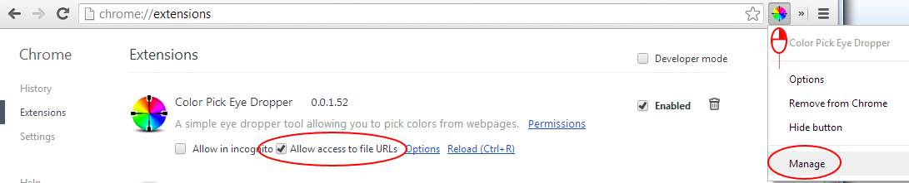
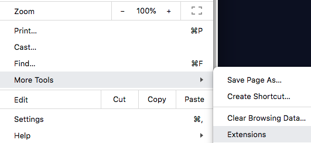
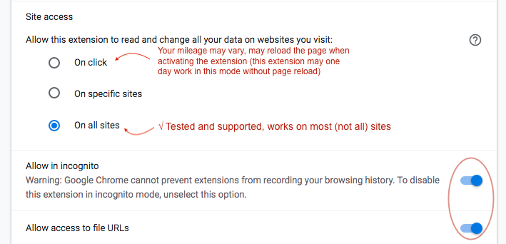

Help
This ColorPick Eyedropper Tablet Edition (extension) is designed to be used with your finger and NOT the mouse.
An even more fluid and responsive version for tablet, touch and phone devices is the Mobile Version of ColorPick.
If you are on a desktop or hybrid computer that sometimes has a mouse or trackpad, this extension works in tandem with the regular ColorPick Eyedropper Extension
and may be launched from that popup too (in a future release).
To enable use on local pages/files follow these steps and then refresh the page you wish to pick colors from:

or more recently:
 
On a standard webpage click the icon then click the image in the popup area to launch the ColorPick Eyedropper Tablet Edition. Some websites may not be supported, if you are having trouble try the Color Wheel linked below.
A Color Wheel to test with. You may have to test with a website instead of an image unfortunately, although for some it may work on image URLs as well.
If you scroll the page and the preview is ever out of sync, trigger the popup again, or you can also press [r] or [j] or click
 to take a new snapshot.
to take a new snapshot.
If you switch to a page that is zoomed in, you may find portions of the screen are solid black pixels. This can be correctd by pressing [r] or
to refresh the snapshot of the page.
Zoom Hints: If you zoom the popup window or this window, the color picker preview popup will always appear at the zoom you set here or in the popup window (control scroll or ctrl +/-) If the zoom of the preview window is messed up press control-0 (command-0) or otherwise reset the zoom of this page or the options page.
Note: zooming this page is not supported, it may cause other things to be zoomed too, such as the picker, which may be good, and it may produce funny results too, it will also cause the pop-out version of the pop-up to be zoomed, you can use this pop-out to adjust or reset zoom. Ctrl-Zero resets the page zoom.
If it doesn't seem to be working, make sure you are on an http:// or https:// page and not on the extensions site. You may have to wait until the page is fully loaded before clicking color picker.
Does not always work with flash objects, try adding wmode="opaque" to the embed code.
This software is considered beta and is provided as-is, please provide feedback for improvements at vidsbee.com/Contact Thanks!